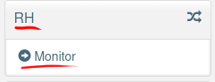
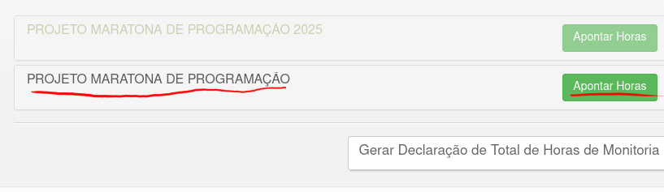
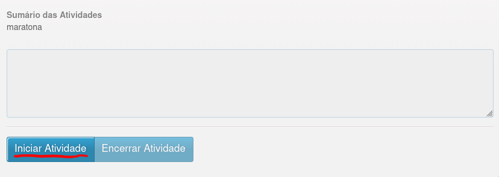
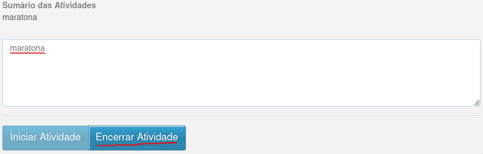

1. Entre no portal do aluno
Portal do Aluno
2. Entre na pagina de monitor, no topico de RH

3. Selecione o projeto da maratona que você está inscrito e clique para apontar horas

4. Clique em iniciar atividade, para marcar o horario de inicio do dia

5. Clique em Encerrar atividade, para marcar o horario de saida do dia na maratona
É necessario colocar uma descrição do que foi feito no dia para encerrar a atividade, este campo pode ser preenchido com "maratona"
